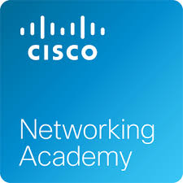
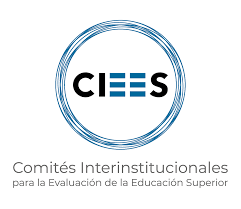
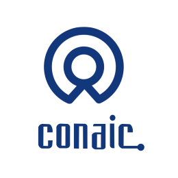
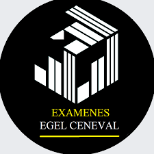

Logros y distinciones

Reconocimientos a Nivel Nacional e Internacional
- La carrera de Ingeniería en Sistemas Estratégicos de Información, desde 2016, ha formado parte del Padrón de Programas de Licenciatura de Alto Rendimiento Académico de CENEVAL. Este 2019 someteremos nuevamente a la convocatoria. El programa de Ingeniería en Sistemas Estratégicos de Información de la UPA, es el único dentro de todas las Universidades Politécnicas del país que tiene esta cantidad de logros.
- El programa de Ingeniería en Sistemas Estratégicos de Información de la UPA es uno de los únicos 17 programas de Ingeniería en Software en todo el país que están dentro del padrón de CENEVAL (la gran mayoría son de universidades privadas).
- La UPA está certificada en ISO9000-2015 (Sistemas de Gestión de Calidad) e ISO14001 (Sistema de Gestión Ambiental) lo cual asegura la calidad de nuestros procesos.
- El programa de Ingeniería en Sistemas Estratégicos de Información de la UPA es considerada de calidad de acuerdo a los evaluadores de CIEES, programa que depende de la SEP y se encuentra en proceso de reacreditación por el organismo evaluador externo CONAIC. Los organismos mencionados evalúan la calidad de los programas académicos de educación superior e Ingeniería en todas las Universidades del país bajo estrictos estándares.
Reconocimientos a Nivel Estatal
- Formamos parte de organismos que integran a las principales universidades aprovechando convenios y otros apoyos. Además contamos con vinculación activa con la gran mayoría de empresa del estado y de la región.
Reconocimientos a nuestros estudiantes
- Un egresado del 2019, fue reconocido como ganador del premio de Excelencia del CENEVAL por sus resultados en el examen EGEL (examen equivalente al EXANI II que se aplicada a nivel licenciatura para las distintas carreras ofertadas por las universidades del país), siendo el primer premio nacional en Aguascalientes en este examen.
- Varios alumnos han realizado movilidades nacionales e internacionales, entre otros a Colombia, España, Estados Unidos, Alemania, Argentina, Brasil y Chile.
Logros de la carrera ISEI

Estamos dentro de CISCO Academy, contando con las certificaciones de cursos de CCNA R&S al salir de la carrera.

Evaluados en nivel 1 ante el Comités Interinstitucionales para la Evaluación de la Educación Superior, A.C. (CIEES).

Acreditados ante el Consejo Nacional de Acreditación en Informática y Computación, A.C. (CONAIC).

Estamos dentro del Padrón de Programas de Alto Rendimiento en el nivel 2 por tercera ocasión consecutiva.